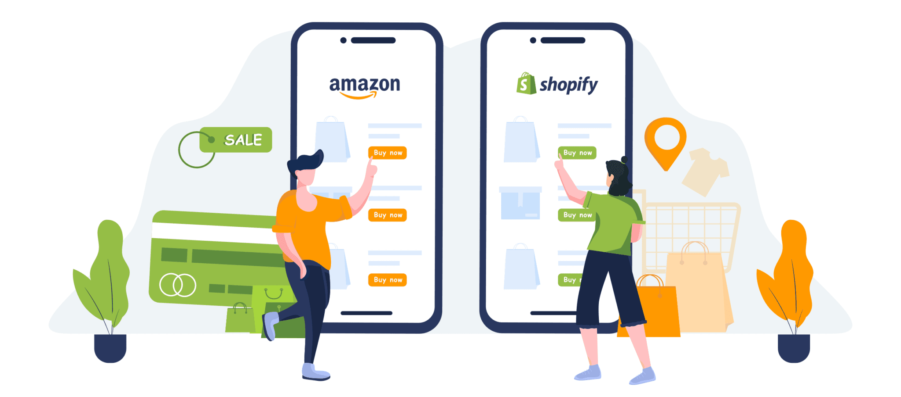
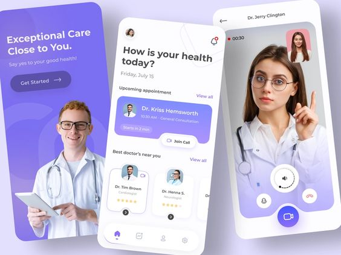
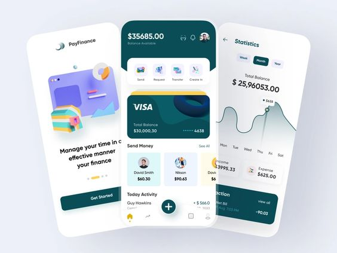
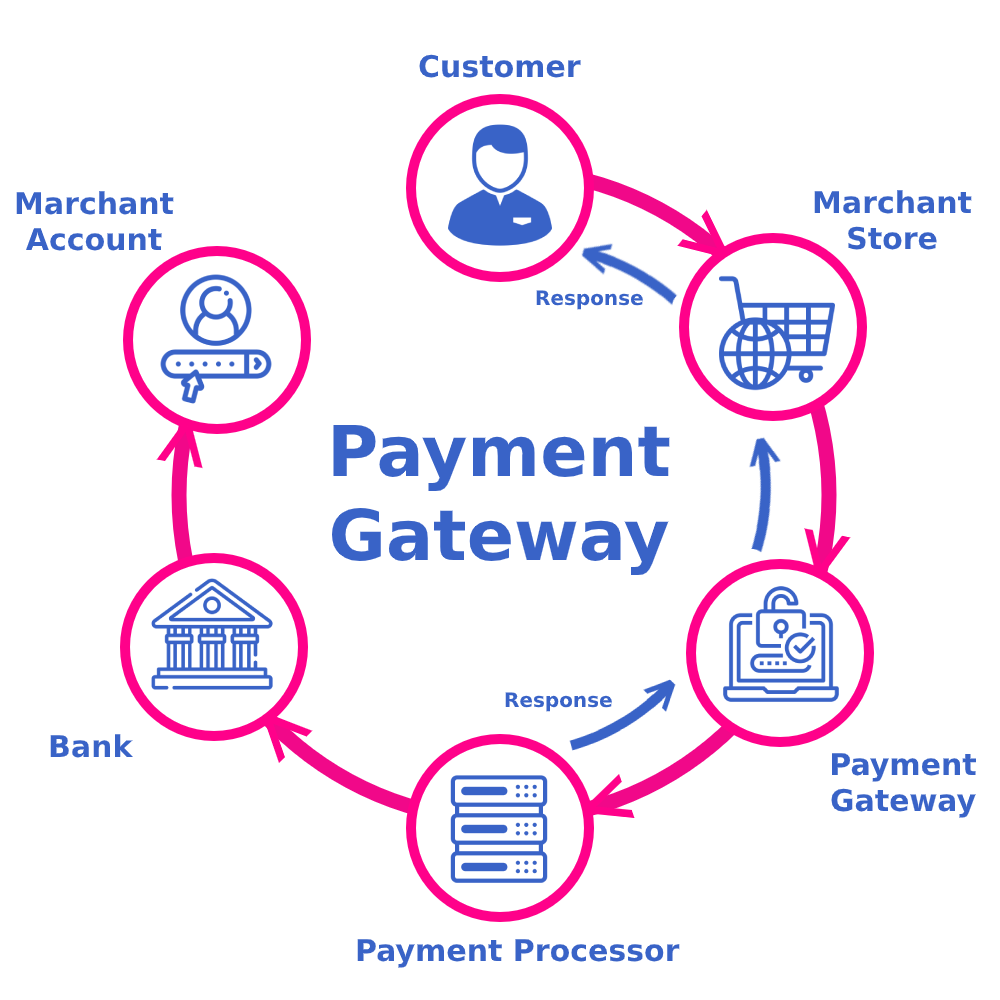
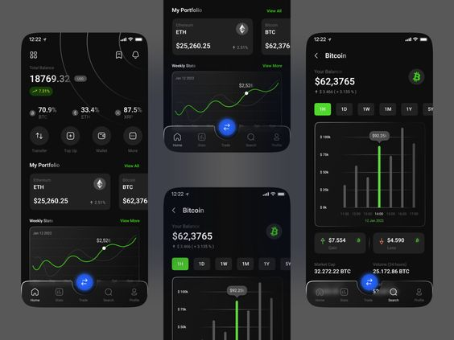
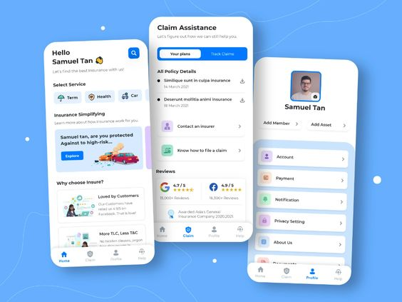
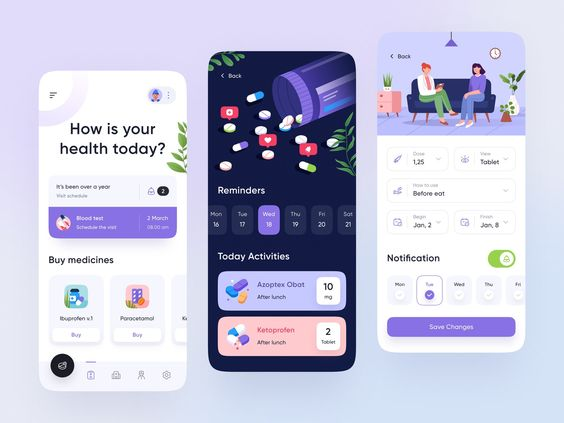
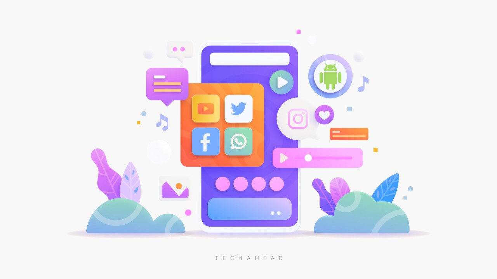

Projects
I am eager to share my extensive project experience as a business analyst, having immersed
myself in diverse domains and collaborated with various clients. My journey spans across
different industries, each presenting unique challenges and opportunities. From e-commerce
platforms to sports management and financial services, I've played a pivotal role in
analyzing requirements, managing stakeholders, and ensuring successful project outcomes. Let
me take you through my multifaceted project experiences and the valuable insights gained
along the way.

E-commerce Buy n Sell App
- Requirement gathering and analysis; created a clear and comprehensive proposal document.
- Collaborated with the team leader and UI/UX designer to discuss the flow and create the UI of the project.
- Orchestrated the development of two distinct apps, focusing on user engagement, product viewing, and business functionality for boutiques.
- Successfully integrated the PhonePe payment gateway for secure and efficient payment processing.

Sports Contest Management App
- Analyzed requirements for a complex app similar to Dream 11, focusing on point calculation systems.
- Managed documents, functional and technical analysis, creating flow, and client communication.
- Implemented OTP-based login, integrated the "Sports Monk" API for real-time match listings, and developed a virtual wallet system.
- Facilitated fair prize distribution among users based on their tiers, creating an admin panel.

Family Media Sharing App
- Managed and analyzed a secure platform with features like OTP-based login and subscription plans for media uploads.
- Integrated iOS and Android In-App Subscription features for seamless payments.
- Provided a user-friendly interface with options for family management, content creation, and post editing.

Ticket Booking and Appointment Scheduling App - Admin Enhancement
- Conducted critical analysis and Jira story management for enhancing the app's admin-doctor side software functionalities.
- Worked on frontend improvements, while backend APIs were provided by the client.
- Managed a complex project with dynamic views and automations.

Mobile Wallet App - Fintech
- Worked as a business analyst on various aspects, creating flow diagrams, including service provider and merchant integration, new versions management, document creation and management BRD, and change requests.
- Worked with MySQL database, ASP .NET, draw.io, API analysis, and many more.

Payment Integration with Service Provider
- Analyzed APIs and documentation provided by the client for seamless integration.
- Created Software Requirement Specifications and facilitated sprint planning using Jira project management tool.

Gold Trading Dashboard App
- Analyzed project documentation, conducted in-depth price alerts analysis using Firebase, and performed database analysis.
- Collaborated in meetings to address challenges and ensure the successful execution of the project.

App for Small Businesses - Financial Services
- Implemented UI enhancements with additional functionalities such as purchasing unique codes and paying for bills for different services.
- Conducted technical and functional analysis, changes to the existing system, and meetings with project managers and developers.

Insurance Purchase App
- Worked on the insurance purchase app, including requirements gathering, client meetings, designing system flow, and UI creation.
- Meetings with developers and leaders to finalize the technical flow, creating backend flow diagrams as the system is dynamic and handled by the admin panel.

Health Care App
- Creating an app for the existing system for hospitals to manage client data.
- Working on data collecting, gathering part as backend API is already created.
- Front-end task planning, Trello milestone listing, and creating workflow.

Other Project
- During my experience as a business analyst, I have worked on a variety of projects. I have included one of the main projects, which is developed and deployed.
- This content is shared solely for informational purposes and does not disclose proprietary or confidential information.
- Thank you so much!